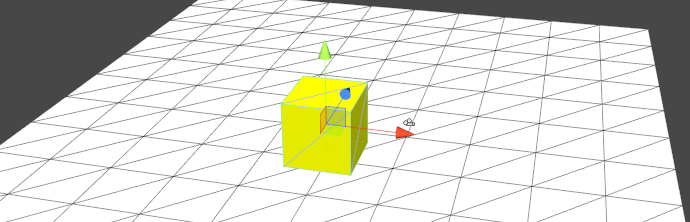
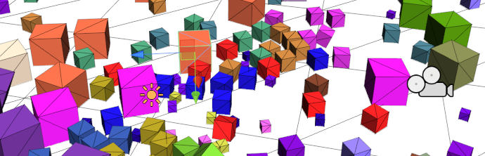
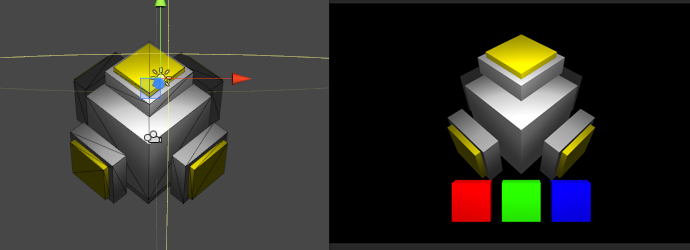
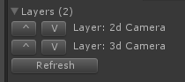
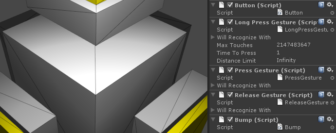
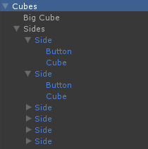

These are tutorials for Unity3d 3.5+.
1. Create a new project.
2. Either import TouchScript.unitypackage or copy TouchScript folder from examples to Assets folder.
Drag and drop Debug Camera from TouchScript/Prefabs folder to see where your touch points lend.
Now if you press Play you can click anywhere in Game view and a nice cian touch cursor with id will appear. The library automatically created TouchScript GameObject in Scene Hierarchy with Touch Manager and Mouse Input Behaviors attached. They are created automatically if no Touch Manager and Input Source instance exhist. If run on a tablet Mobile Input is created instead.
A good practice is to create them manually because this way you can set their parameters and add more input sources.
3. Create a new GameObject named TouchScript.
Actually, it doesn't matter how you call it.
4. Add Touch Manager and Mouse Input behaviors to this GameObject.
If you press Play you'll see the same behavior as before. But now you can add TUIO Input which will be listening for touch data at port 3333 and you can use TUIOPad on iOs or TUIODroid on Android to test multi-touch interaction.
5. Add a plane, some lights and a simple Cube with Rigid Body component attached.
6. Attach TapGesture to the Cube and make a prefab from it.
You'll end up with something like this:

7. Create a simple c# script file, call it Breaker.
Paste this code:
using UnityEngine;
using TouchScript.Gestures;
public class Breaker : MonoBehaviour
{
public Transform CubePrefab;
public float Power = 10.0f;
private Vector3[] directions = {
new Vector3(1, -1, 1),
new Vector3(-1, -1, 1),
new Vector3(-1, -1, -1),
new Vector3(1, -1, -1),
new Vector3(1, 1, 1),
new Vector3(-1, 1, 1),
new Vector3(-1, 1, -1),
new Vector3(1, 1, -1)
};
private void Start()
{
GetComponent<TapGesture>().StateChanged += HandleStateChanged;
}
private void HandleStateChanged(object sender, TouchScript.Events.GestureStateChangeEventArgs e)
{
if (e.State == Gesture.GestureState.Recognized)
{
if (transform.localScale.x > 0.05f)
{
Color color = new Color(Random.value, Random.value, Random.value);
for (int i = 0; i < 8; i++)
{
var c = Instantiate(CubePrefab) as Transform;
c.parent = transform.parent;
c.name = "Cube";
c.localScale = 0.5f*transform.localScale;
c.position = transform.TransformPoint(c.localScale.x/10.0f*directions[i]);
c.rigidbody.velocity = Power*Random.insideUnitSphere;
c.renderer.material.color = color;
}
}
Destroy(gameObject);
}
}
}
8. Add it to the cube prefab and assign it as a value of Cube Prefab property.
Press Play and test how Tap Gesture works by clicking the cubes. For better experience get an iPad and run TUIOPad on it.

Now let's get back to the code. Line 22.
GetComponent<TapGesture>().StateChanged += HandleStateChanged;
To get notified when a gesture is recognized you need to subscribe to its StateChanged event.
if (e.State == Gesture.GestureState.Recognized)
At line 27 we check if this state change is indeed what we are interested in — GestureState.Recognized, because gestures change states all the time. Most common ones are Possible and Failed.
After that the cube just spawns 8 smaller copies and destroys itself.
In this tutorial we will not build a scene from scratch. Instead we will look at the exhisting example.

Open Everything Combined Example.unity from default examples. You'll see a strange structure made of cubes and 3 colored cubes on foreground. First of all let's take a look at TouchScript GameObject.
Notice that now we got two camera layers. They are attached to 2d Camera and 3d Camera. Layers is a way to specify the order in which the library looks for objects hit by touch points. In this example the topmost camera rendering 2d RGB buttons is tested first and after that the 3d camera is used. If there's no layer in scene the library adds one to the main camera.
Now let's check the RGB buttons which are seen by 2d Camera. They got several scripts attached:
Button — listens for Long Press Gesture and changes main cube's color.Long Press Gesture — fires if a user have been holding a button for more than a second.Press Gesture — fires when an object is pressed.Release Gesture — fires when an object is released.Bump — listens for Press Gesture and Release Gesture to change scale.
Listening for gesture events is simple. This is pretty much all the code in Bump component:
private void Start()
{
if (GetComponent<PressGesture>() != null) GetComponent<PressGesture>().StateChanged += onPress;
if (GetComponent<ReleaseGesture>() != null) GetComponent<ReleaseGesture>().StateChanged += onRelease;
startScale = transform.localScale;
}
private void onRelease(object sender, GestureStateChangeEventArgs e)
{
if (e.State == Gesture.GestureState.Recognized)
transform.localScale = startScale;
}
private void onPress(object sender, GestureStateChangeEventArgs e)
{
if (e.State == Gesture.GestureState.Recognized)
transform.localScale = startScale*.7f;
}
The rest of the cubes are more interesting. Check out the hierarchy starting from Cubes GameObject.
Every object in hierarchy got a gesture or two attached:
Cubes can be rotated with a gesture involving two or more fingers.Big Cube can be rotated and scaled separately.Side can be moved away from face it is attached to.Buttons on every side which can be pressed to rotate the whole structure.The structure consists of a big cube and six sides. Every side has a yellow button.
And all these gestures work together. For example check out Scale Gesture on Big Cube. In Will Recognize With array it got a link to Rotate Gesture on the same object which says that these two gestures can work together, so the object can be rotated and scaled simultaneously.
Press Play and try to work with the structure. Of course, it would be better if you had a multi-touch enabled device or used TUIOPad, but you can use debug mode with MouseInput which creates a second stationary touch when you press ALT+click.